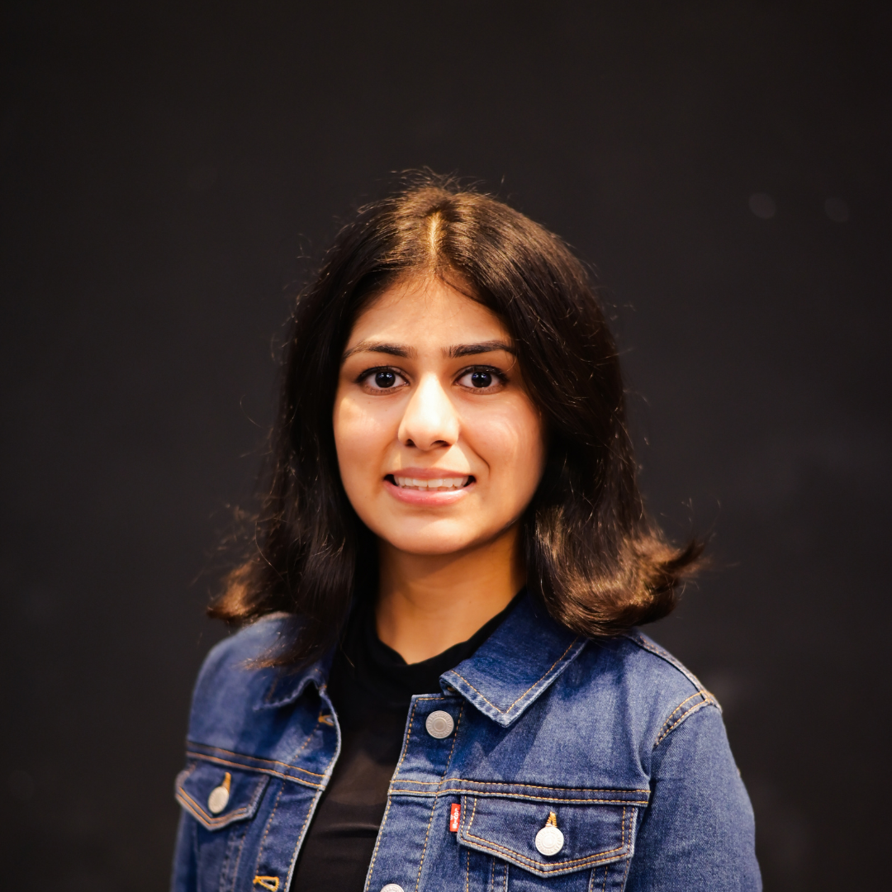
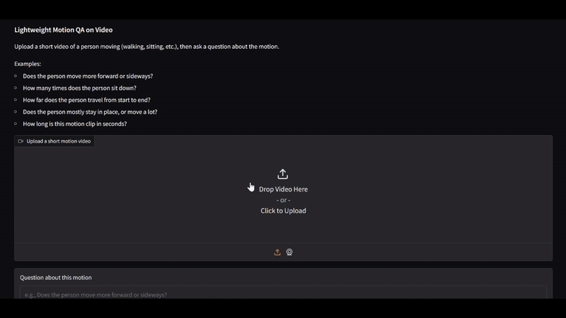
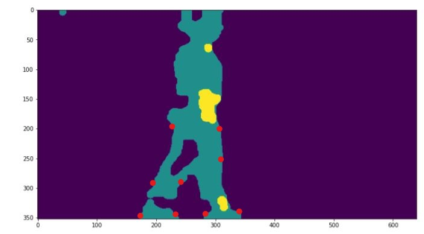
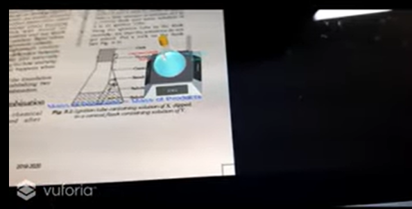
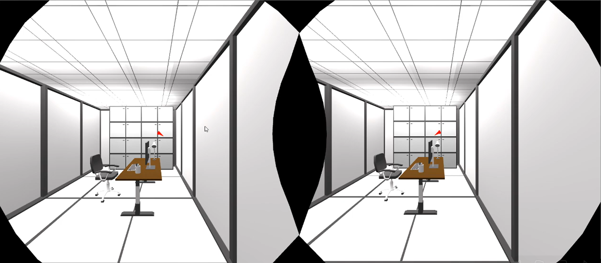
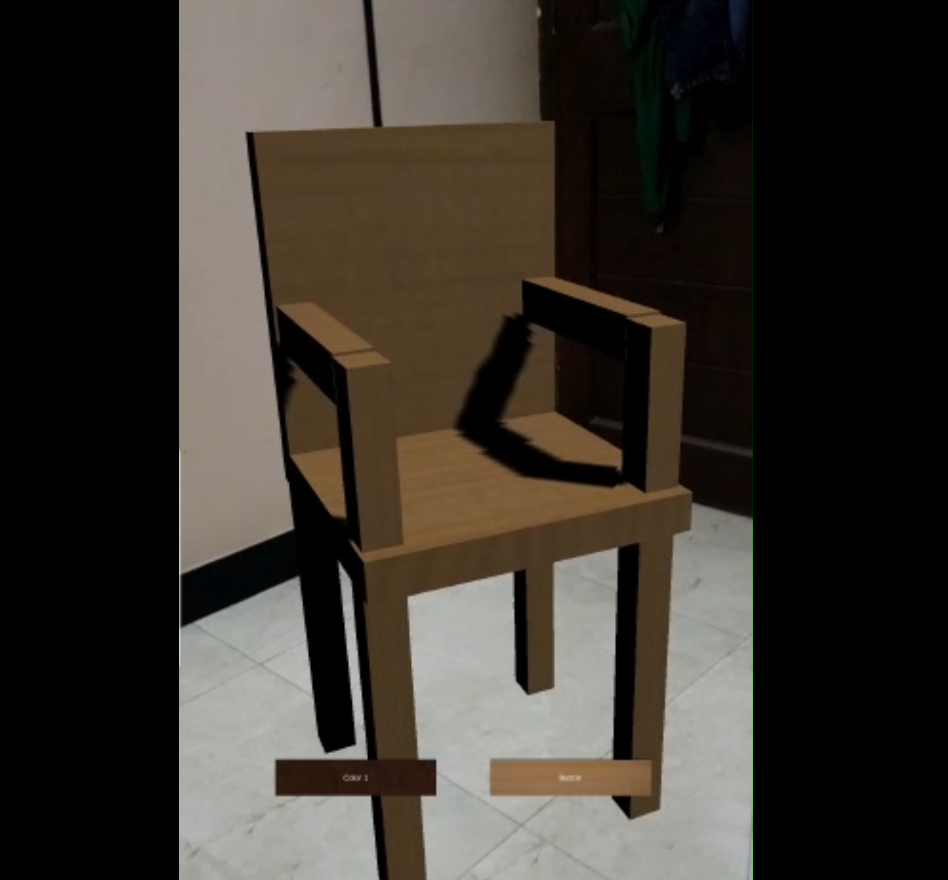
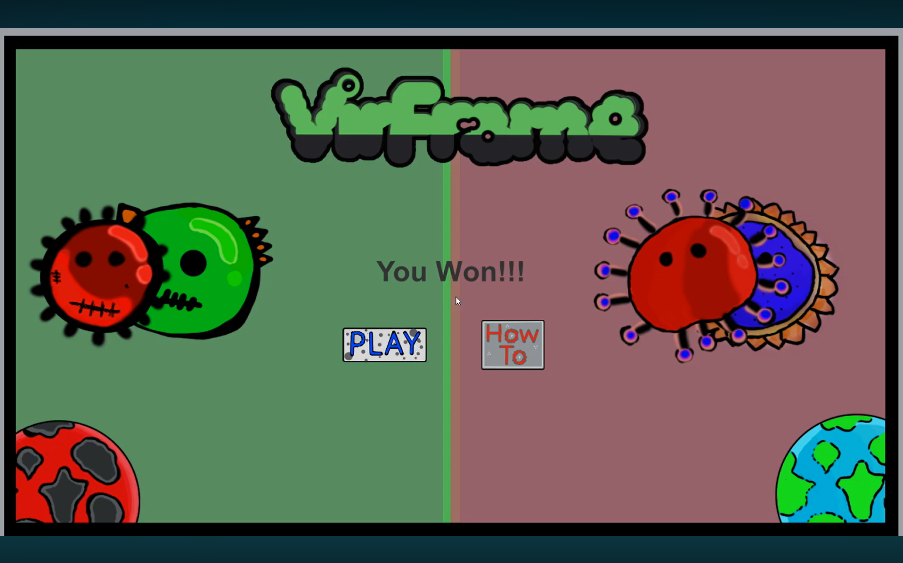

|
Sanjana Jain
I am an aspiring MS in Computer Science student with 3+ years of experience working on
large-scale enterprise systems at Deloitte USI in Risk and Financial Advisory. My work
spans Identity and Access Management across Windows applications and Unix servers, where
I managed user access, configured IAM roles and entitlements, and resolved technical issues in
production environments.
Alongside industry experience, I have built a portfolio of 25+ projects in
Game Development, Augmented Reality (AR), Mixed Reality (MR), and interactive systems.
I am a national hackathon winner and a Southern Asia qualifier in the
OpenCV AI Competition, with a growing focus on Computer Vision and
Machine Learning to merge movement analysis with technology.
Email |
GitHub |
LinkedIn
|

|
|
Smart India Hackathon Winner
Unity, Vuforia, IBM Watson, Blender | March 2019
- Built a Mixed Reality insurance support tool to streamline customer onboarding and explain claim processes.
- Selected as a national winner for innovation, technical execution, and real-world applicability across India.
Build for Digital India Hackathon (Google)
Unity, ARCore, TensorFlow | February 2020
- Developed an end-to-end AR-based retail interface to enhance in-store shopping experiences.
- Implemented store navigation, product visualization, and recommendation flows.
Facebook Spark AR Open Program Scholarship & Certification
School of Innovation India from Facebook | March - June 2020
- Selected in the top 250 teams out of 10,000+ applicants for the Spark AR flagship program.
- Trained in Spark AR, 3D modelling, visual scripting, and reactive programming in a team of two.
OpenCV AI Competition - Southern Asia Qualifier
Gait Analysis for Parkinson's Disease | March - August 2021
- Phase 1 winners in the South Asia region and selected as one of the top 150 research projects worldwide.
- Implemented a Computer Vision pipeline to detect Parkinson's Disease indicators through gait analysis.
|
|

|
Lightweight Motion QA
MediaPipe, PyTorch, OpenAI API | 2025 | Personal Project
- Built a lightweight system that lets users ask questions about human motion.
- Designed the full browser workflow for uploading short videos and receiving motion-aware answers.
|
|

|
Gait Analysis for Parkinson's Disease
OpenPose, OpenCV | 2021 | Senior Year Project
- Designed an inexpensive diagnosis pipeline for Parkinson's Disease using gait analysis.
- Implemented background extraction and morphological transformations for skeletonization.
|
|

|
EduAR - Interactive AR Learning Platform
Unity, C#, Flutter, Dialogflow | 2020 | Junior Year
- Developed an AR-based learning platform with animated 3D simulations for teaching science concepts.
- Integrated chatbot features and Slack-based remote learning support.
|
|

|
AR/VR COVID-19 Awareness Simulation
Unity, Vuforia, C#, Blender | 2020 | Dishathon
- Built AR and VR simulations illustrating COVID spread in public spaces.
- Simulated impact of distancing and mask usage using interactive scenes.
|
|

|
FurnitureAR - In-Home AR Furniture Visualization
Unity, C#, Blender | 2020 | WieHack
- Created an AR app for visualizing furniture placement inside real environments.
- Implemented object placement, scaling, and light adjustments.
|
|

|
VirFrame - Interactive COVID Awareness Game
Unity, C#, Photoshop | 2020 | GMTK Game Jam
- Designed a 2D platformer to gamify pandemic awareness.
- Implemented gameplay mechanics and UI in a time-restricted jam.
|
|